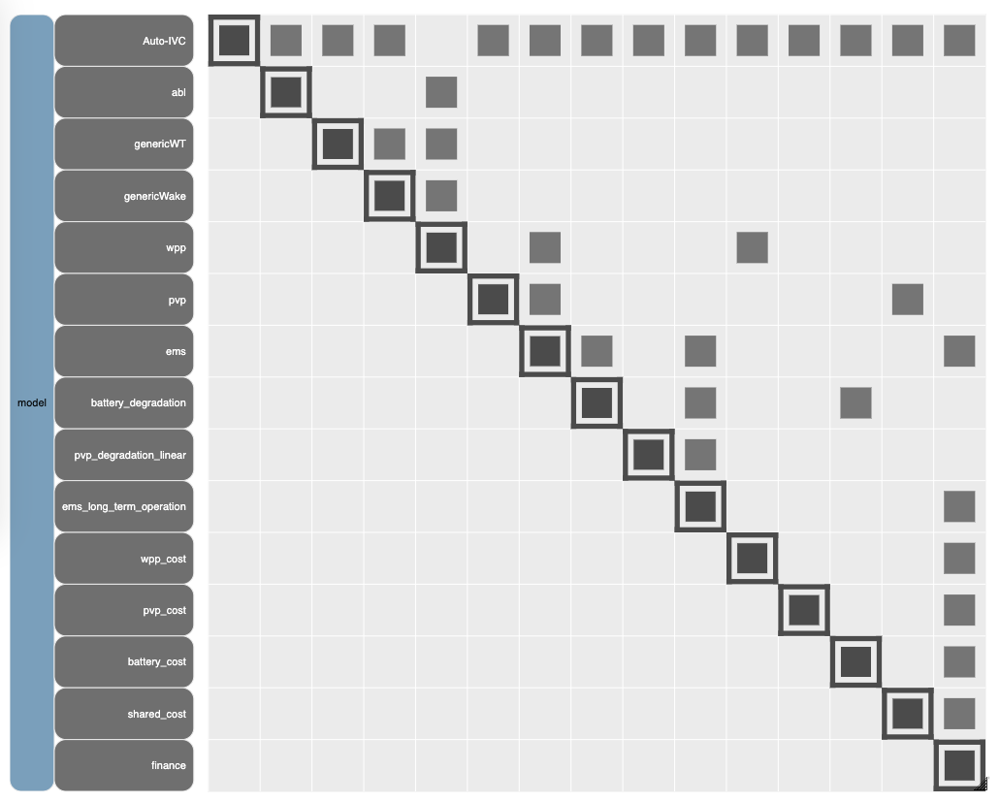
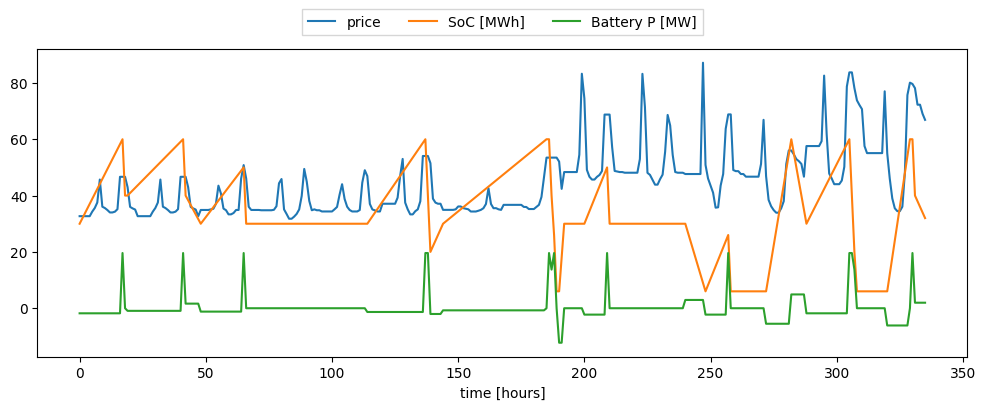
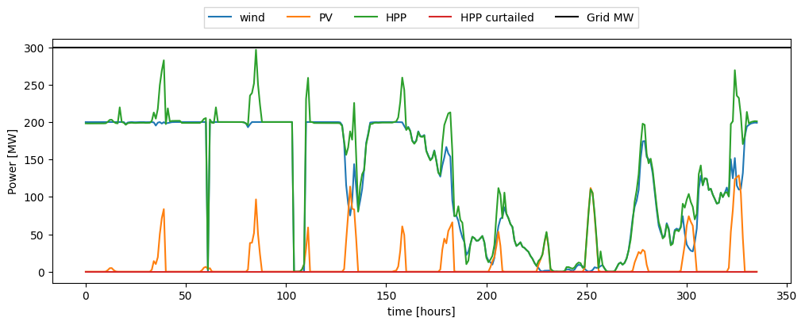
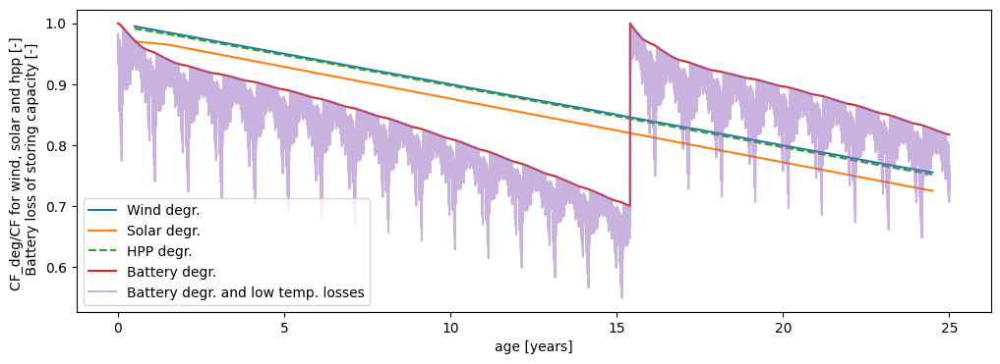
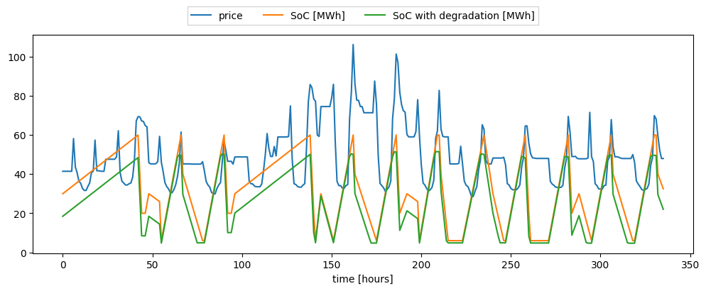
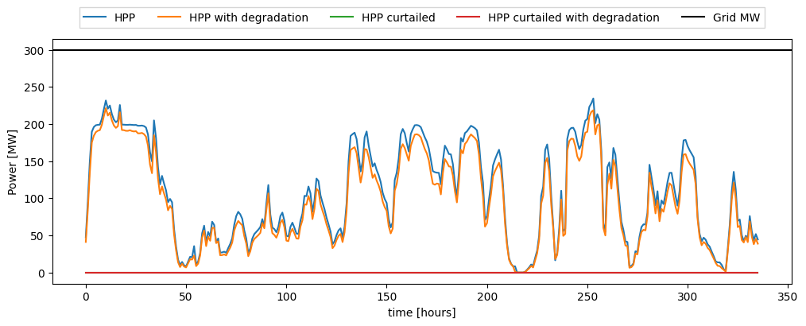
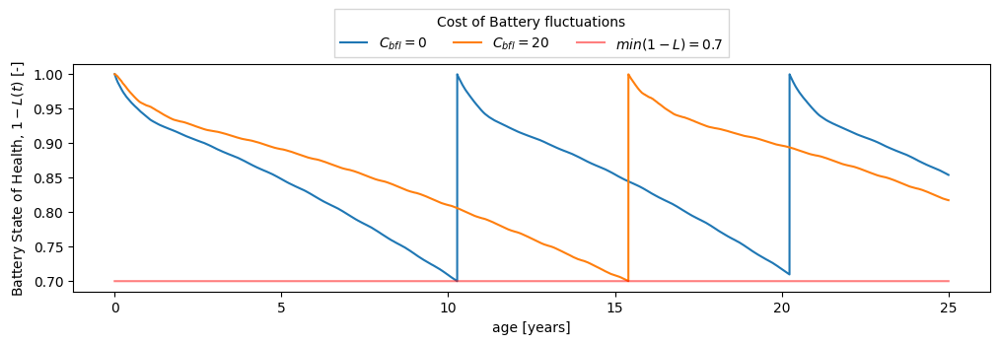

Quickstart
Evaluating the performance of a hybrid power plant using HyDesign
Welcome to the HyDesign Quickstart Guide. HyDesign is an open-source tool for design and optimization of utility scale wind-solar-storage based hybrid power plants. This tutorial will help you get up and running quickly with HyDesign. You will learn how to install the software, set up your environment, load data for a specfic site from HyDesign example sites, create a simple hybrid power plant (HPP) model, and visualize the results. This guide is designed for users who are new to HyDesign and want to start modeling hybrid power plants with minimal setup.
In this notebook we will evaluate a simplified hybrid power plant design in France with good wind. A simplified hybrid power plant design consists on selecting the following parameters:
Wind Plant design:
Number of wind turbines in the wind plant [-] (
Nwt)Wind power installation density [MW/km2] (
wind_MW_per_km2): This parameter controls how closely spaced are the turbines, which in turns affect how much wake losses are present.
PV Plant design:
Solar plant power capacity [MW] (
solar_MW)
Battery Storage design:
Battery power [MW] (
b_P)Battery energy capacity in hours [MWh] (
b_E_h): Battery storage capacity in hours of full battery power (b_E = b_E_h * b_P).Cost of battery power fluctuations in peak price ratio [-] (
cost_of_batt_degr): This parameter controls how much penalty is given to do ramps in battery power in the HPP operation.
Imports
Install hydesign if needed. Import basic libraries. Import HPP model assembly class. Import the examples file path.
[1]:
# Detect if running in Kaggle
import os
if os.environ.get('KAGGLE_KERNEL_RUN_TYPE'):
mypaths = !python -c "import sysconfig; print(sysconfig.get_paths()['purelib'])"
mypath = mypaths[0]
!pip install trash-cli
!trash $mypath/numpy*
!pip install --upgrade numpy
!pip install finitediff
import os
os.kill(os.getpid(), 9)
[2]:
# Install hydesign if needed
import importlib
if not importlib.util.find_spec("hydesign"):
!pip install git+https://gitlab.windenergy.dtu.dk/TOPFARM/hydesign.git
[2]:
import os
import time
import yaml
import numpy as np
import pandas as pd
import matplotlib.pyplot as plt
from hydesign.assembly.hpp_assembly import hpp_model
from hydesign.examples import examples_filepath
C:\Users\mikf\Anaconda3\envs\hd2\lib\site-packages\pyoptsparse\pyOpt_MPI.py:68: UserWarning: mpi4py could not be imported. mpi4py is required to use the parallel gradient analysis and parallel objective analysis for non-gradient based optimizers. Continuing using a dummy MPI module from pyOptSparse.
warnings.warn(warn)
Specifying the site
Hydesign, provides example data from several sites in India and Europe.
The site coordinates (longitude, latitude, and altitude) are given in examples_sites.csv.
[3]:
examples_sites = pd.read_csv(f'{examples_filepath}examples_sites.csv', index_col=0, sep=';')
examples_sites
[3]:
| case | name | longitude | latitude | altitude | input_ts_fn | sim_pars_fn | price_fn | price_col | H2_demand_col | |
|---|---|---|---|---|---|---|---|---|---|---|
| 0 | India | Indian_site_good_wind | 77.500226 | 8.334294 | 679.803454 | India/GWA3/input_ts_Indian_site_good_wind.csv | India/hpp_pars.yml | India/Indian_elec_price_t.csv | Price | India/H2_demand.csv |
| 1 | India | Indian_site_good_solar | 68.542204 | 23.542099 | 29.883557 | India/GWA3/input_ts_Indian_site_good_solar.csv | India/hpp_pars.yml | India/Indian_elec_price_t.csv | Price | India/H2_demand.csv |
| 2 | India | Indian_site_bad_solar_bad_wind | 77.916878 | 17.292316 | 627.424643 | India/GWA3/input_ts_Indian_site_bad_solar_bad_... | India/hpp_pars.yml | India/Indian_elec_price_t.csv | Price | India/H2_demand.csv |
| 3 | Europe | France_good_solar | 4.229736 | 44.422011 | 204.000000 | Europe/GWA3/input_ts_France_good_solar.csv | Europe/hpp_pars.yml | Europe/2030-EL_PRICE.csv | FR_R | Europe/H2_demand.csv |
| 4 | Europe | France_good_wind | -0.864258 | 48.744116 | 302.000000 | Europe/GWA3/input_ts_France_good_wind.csv | Europe/hpp_pars.yml | Europe/2030-EL_PRICE.csv | FR_R | Europe/H2_demand.csv |
| 5 | Europe | France_bad_solar_n_wind | 2.167969 | 47.428087 | 140.000000 | Europe/GWA3/input_ts_France_bad_solar_n_wind.csv | Europe/hpp_pars.yml | Europe/2030-EL_PRICE.csv | FR_R | Europe/H2_demand.csv |
| 6 | Europe | Germany_bad_solar_n_wind | 10.766602 | 49.310798 | 442.000000 | Europe/GWA3/input_ts_Germany_bad_solar_n_wind.csv | Europe/hpp_pars.yml | Europe/2030-EL_PRICE.csv | DE_ME | Europe/H2_demand.csv |
| 7 | Europe | Germany_good_wind | 7.873535 | 53.287111 | 5.000000 | Europe/GWA3/input_ts_Germany_good_wind.csv | Europe/hpp_pars.yml | Europe/2030-EL_PRICE.csv | DE_NW | Europe/H2_demand.csv |
| 8 | Europe | Denmark_good_solar | 11.813965 | 55.397760 | 42.000000 | Europe/GWA3/input_ts_Denmark_good_solar.csv | Europe/hpp_pars.yml | Europe/2030-EL_PRICE.csv | DK_E | Europe/H2_demand.csv |
| 9 | Europe | Denmark_good_wind | 8.594398 | 56.227322 | 85.000000 | Europe/GWA3/input_ts_Denmark_good_wind.csv | Europe/hpp_pars.yml | Europe/2030-EL_PRICE.csv | DK_W | Europe/H2_demand.csv |
select a site to run
[4]:
name = 'France_good_wind'
ex_site = examples_sites.loc[examples_sites.name == name]
longitude = ex_site['longitude'].values[0]
latitude = ex_site['latitude'].values[0]
altitude = ex_site['altitude'].values[0]
Input data: weather and electricity price
For each site a csv input file is provided. This file contains the weather and the spot market electricity prices.
The columns required are:
Wind speed at multiple heights (
WS_hh, where hh is the height in meters). In order to estimate the PV cell temperature, it is important to have a wind speed close to the ground (WS_1).(optional) Wind direction at multiple heights (
WD_hh, where hh is the height in meters). Wind directions can be used when the layout of the wind farm is known and therefore the wind generation depends on the wind direction.Air temperature in Kelvin close to the ground (
temp_air_1)Global horizontal irradiance (
ghi).Direct normal irradiance (
dni).Diffuse horizontal irradiance (
dhi).Spot market electricity prices (
Price)
[5]:
input_ts_fn = examples_filepath+ex_site['input_ts_fn'].values[0]
input_ts = pd.read_csv(input_ts_fn, index_col=0, parse_dates=True)
required_cols = [col for col in input_ts.columns if 'WD' not in col]
input_ts = input_ts.loc[:,required_cols]
input_ts
[5]:
| WS_1 | WS_50 | WS_100 | WS_150 | WS_200 | temp_air_1 | ghi | dni | dhi | Price | |
|---|---|---|---|---|---|---|---|---|---|---|
| 2012-01-01 00:00:00 | 5.031528 | 11.491562 | 13.293840 | 15.697655 | 16.581168 | 284.873662 | 0.10670 | 0.0 | 0.10670 | 32.685 |
| 2012-01-01 01:00:00 | 4.527461 | 10.535852 | 12.225673 | 14.449516 | 15.304116 | 284.759079 | 0.05335 | 0.0 | 0.05335 | 32.685 |
| 2012-01-01 02:00:00 | 4.485136 | 10.576099 | 12.302628 | 14.711214 | 15.679654 | 284.682409 | 0.00000 | 0.0 | 0.00000 | 32.685 |
| 2012-01-01 03:00:00 | 4.684235 | 10.943120 | 12.708081 | 15.154307 | 16.165412 | 284.804835 | 0.00000 | 0.0 | 0.00000 | 32.685 |
| 2012-01-01 04:00:00 | 4.698410 | 11.066226 | 12.869864 | 15.381294 | 16.433400 | 284.912742 | 0.00000 | 0.0 | 0.00000 | 32.685 |
| ... | ... | ... | ... | ... | ... | ... | ... | ... | ... | ... |
| 2012-12-31 19:00:00 | 6.927975 | 15.510276 | 17.877532 | 19.361598 | 21.069684 | 281.919356 | 0.00000 | 0.0 | 0.00000 | 37.591 |
| 2012-12-31 20:00:00 | 6.355326 | 14.262557 | 16.448514 | 17.822397 | 19.521058 | 281.790435 | 0.00000 | 0.0 | 0.00000 | 35.839 |
| 2012-12-31 21:00:00 | 5.456462 | 12.476146 | 14.429818 | 15.918705 | 17.597519 | 281.700990 | 0.00000 | 0.0 | 0.00000 | 35.362 |
| 2012-12-31 22:00:00 | 4.000478 | 9.516692 | 11.088230 | 12.442577 | 13.866160 | 281.499113 | 0.00000 | 0.0 | 0.00000 | 34.468 |
| 2012-12-31 23:00:00 | 3.073095 | 7.789771 | 9.176926 | 10.399925 | 11.612548 | 281.450042 | 0.00000 | 0.0 | 0.00000 | 33.417 |
8784 rows × 10 columns
Additional data
Each region has a different hybrid power plant evaluation parameter file (hpp_pars.yml). This file contains all the assumptions on the valuation of a hyrbid power plant.
In the examples, the Indian sites have specified a requiredment to provide power at peak hours. This requirement is specified by setting the minimum number of full power hours at peak prices times per day.
For example the Indian case penalty has expected hours of 0.85*3= 2.55:
n_full_power_hours_expected_per_day_at_peak_price: 2.55
While the Europe sites have no penalty.
n_full_power_hours_expected_per_day_at_peak_price: 0
[6]:
sim_pars_fn = examples_filepath+ex_site['sim_pars_fn'].values[0]
with open(sim_pars_fn) as file:
sim_pars = yaml.load(file, Loader=yaml.FullLoader)
print(sim_pars_fn)
sim_pars
c:/sandbox/repo/topfarm/hydesign/hydesign/examples/Europe/hpp_pars.yml
[6]:
{'G_MW': 300,
'year': '2012',
'N_life': 25,
'wind_turbine_cost': 640000,
'wind_civil_works_cost': 260000,
'wind_fixed_onm_cost': 12600,
'wind_variable_onm_cost': 1.35,
'd_ref': 145,
'hh_ref': 100,
'p_rated_ref': 5.0,
'wpp_efficiency': 1,
'wind_deg_yr': [0, 25],
'wind_deg': [0, 0.25],
'share_WT_deg_types': 0.5,
'solar_PV_cost': 110000,
'solar_hardware_installation_cost': 100000,
'solar_inverter_cost': 20000,
'solar_fixed_onm_cost': 4500,
'land_use_per_solar_MW': 0.01226,
'tracking': 'No',
'pv_deg_yr': [0, 1, 25],
'pv_deg': [0.03, 0.03, 0.28],
'battery_energy_cost': 45000,
'battery_power_cost': 16000,
'battery_BOP_installation_commissioning_cost': 18000,
'battery_control_system_cost': 4500,
'battery_energy_onm_cost': 0,
'battery_depth_of_discharge': 0.9,
'battery_charge_efficiency': 0.98,
'battery_price_reduction_per_year': 0.1,
'min_LoH': 0.7,
'n_full_power_hours_expected_per_day_at_peak_price': 0,
'peak_hr_quantile': 0.9,
'price_H2': 5,
'storage_eff': 0.9,
'ptg_deg': 2,
'hhv': 39.3,
'water_consumption': 9.4,
'electrolyzer_capex_cost': 480000,
'electrolyzer_opex_cost': 9600,
'electrolyzer_power_electronics_cost': 0,
'water_cost': 4,
'water_treatment_cost': 2,
'H2_storage_capex_cost': 300,
'H2_storage_opex_cost': 3,
'H2_transportation_cost': 5,
'H2_transportation_distance': 0,
'penalty_factor_H2': 0.5,
'electrolyzer_eff_curve_name': 'Alkaline electrolyzer H2 production',
'min_power_standby': 0.1,
'ramp_up_limit': 50,
'ramp_down_limit': 50,
'hpp_BOS_soft_cost': 119940,
'hpp_grid_connection_cost': 50000,
'land_cost': 300000,
'wind_WACC': 0.052,
'solar_WACC': 0.048,
'battery_WACC': 0.08,
'tax_rate': 0.22,
'ptg_WACC': 0.07,
'phasing_yr': [-1, 0],
'phasing_CAPEX': [1, 1],
'inflation_yr': [-3, 0, 1, 25],
'inflation': [0.1, 0.1, 0.06, 0.06],
'ref_yr_inflation': 0,
'depreciation_yr': [0, 25],
'depreciation': [0, 1],
'era5_zarr': '/groups/reanalyses/era5/app/era5.zarr',
'ratio_gwa_era5': '/groups/INP/era5/ratio_gwa2_era5.nc',
'era5_ghi_zarr': '/groups/INP/era5/ghi.zarr',
'elevation_fn': '/groups/INP/era5/SRTMv3_plus_ViewFinder_coarsen.nc'}
Wind Turbine parameters:
Hub height [m]
Rotor diameters [m]
Rated power of the wind turbine [MW] (
p_rated)
PV parameters:
Surface tilt [deg] (
surface_tilt)Surface azimuth [deg] (
surface_azimuth)DC-AC ratio [-] (
solar_DCAC): This parameter controls how much over-planting of PV (in DC power) is connected to the inverters. It is common practice in PV design to havesolar_DCAC = 1.5.
[7]:
rotor_diameter_m = 220
hub_height_m = 130
wt_rated_power_MW = 10
surface_tilt_deg = 35
surface_azimuth_deg = 180
DC_AC_ratio = 1.5
Initializing the HPP model
Initialize the HPP model (hpp_model class) with the coordinates and the necessary input files.
[8]:
hpp = hpp_model(
latitude,
longitude,
altitude,
rotor_diameter_m = rotor_diameter_m,
hub_height_m = hub_height_m,
wt_rated_power_MW = wt_rated_power_MW,
surface_tilt_deg = surface_tilt_deg,
surface_azimuth_deg = surface_azimuth_deg,
DC_AC_ratio = DC_AC_ratio,
num_batteries = 5,
work_dir = './',
sim_pars_fn = sim_pars_fn,
input_ts_fn = input_ts_fn,
)
Fixed parameters on the site
-------------------------------
longitude = -0.864258
latitude = 48.744116
altitude = 302.0
Extract data from DTU’s ERA5 database
[9]:
# price_fn = examples_filepath+ex_site['price_fn'].values[0]
# price = pd.read_csv(price_fn,index_col=0, parse_dates=True)[ex_site.price_col.values[0]]
# hpp = hpp_model_simple(
# latitude,
# longitude,
# altitude,
# rotor_diameter_m = rotor_diameter_m,
# hub_height_m = hub_height_m,
# wt_rated_power_MW = wt_rated_power_MW,
# surface_tilt_deg = surface_tilt_deg,
# surface_azimuth_deg = surface_azimuth_deg,
# DC_AC_ratio = DC_AC_ratio,
# num_batteries = 1,
# work_dir = './',
# sim_pars_fn = sim_pars_fn,
# input_ts_fn=None,
# price_fn=price,
# )
Evaluating the HPP model
[10]:
start = time.time()
Nwt = 20
wind_MW_per_km2 = 7
solar_MW = 150
b_P = 20
b_E_h = 3
cost_of_batt_degr = 5
clearance = hub_height_m - rotor_diameter_m / 2
sp = 4 * wt_rated_power_MW * 10 ** 6 / np.pi / rotor_diameter_m ** 2
x = [# Wind plant design
clearance, sp, wt_rated_power_MW, Nwt, wind_MW_per_km2,
# PV plant design
solar_MW, surface_tilt_deg, surface_azimuth_deg, DC_AC_ratio,
# Energy storage & EMS price constrains
b_P, b_E_h, cost_of_batt_degr]
outs = hpp.evaluate(*x)
hpp.print_design(x, outs)
end = time.time()
print(f'exec. time [min]:', (end - start)/60 )
Design:
---------------
clearance [m]: 20.000
sp [W/m2]: 263.066
p_rated [MW]: 10.000
Nwt: 20.000
wind_MW_per_km2 [MW/km2]: 7.000
solar_MW [MW]: 150.000
surface_tilt [deg]: 35.000
surface_azimuth [deg]: 180.000
DC_AC_ratio: 1.500
b_P [MW]: 20.000
b_E_h [h]: 3.000
cost_of_battery_P_fluct_in_peak_price_ratio: 5.000
NPV_over_CAPEX: 1.471
NPV [MEuro]: 495.485
IRR: 0.151
LCOE [Euro/MWh]: 26.872
CAPEX [MEuro]: 336.731
OPEX [MEuro]: 6.416
Wind CAPEX [MEuro]: 222.901
Wind OPEX [MEuro]: 5.403
PV CAPEX [MEuro]: 50.250
PV OPEX [MEuro]: 1.012
Batt CAPEX [MEuro]: 4.026
Batt OPEX [MEuro]: 0.000
Shared CAPEX [MEuro]: 59.553
Shared Opex [MEuro]: 0.000
penalty lifetime [MEuro]: 0.000
AEP [GWh]: 1121.785
GUF: 0.427
grid [MW]: 300.000
wind [MW]: 200.000
solar [MW]: 150.000
Battery Energy [MWh]: 60.000
Battery Power [MW]: 20.000
Total curtailment [GWh]: 13.997
Awpp [km2]: 28.571
Apvp [km2]: 1.839
Plant area [km2]: 28.571
Rotor diam [m]: 220.000
Hub height [m]: 130.000
Number of batteries used in lifetime: 2.000
Break-even PPA price [Euro/MWh]: 17.961
Capacity factor wind [-]: 0.533
exec. time [min]: 0.22196700970331829
Understanding the sub-models
Plot an interactive N2 diagram (or N-squared diagram) to explore all components and interfaces between system elements.
Hydesign consists of several submodels:
Wind turbines/plant:
genericWT: generic wind turbine model
genericWake: generic wake losses model
wpp: wind power plant
wpp_cost: wind power plant cost model
PV plant:
pvp: PV power plant
pvp_degradation_linear: PV degradation model
pvp_cost: PV power plant cost model
Battery:
battery_degradation: Battery degradation model
battery_cost: Battery cost model
HPP operation
ems: (Energy Management System) Idealized hpp operation design. This component optimizes the operation of a HPP without considering degradation (PV nor Battery).
ems_long_term_operation: This component executes the hpp operation changes in expected generation profiles and/or degradation on battery. This component tries to follow the operation plan (results of ems).
HPP
shared_costs: Shared HPP infrastructure cost model
finance: HPP financial performance metrics model
[11]:
from openmdao.visualization.n2_viewer.n2_viewer import n2
#n2(hpp.prob) ## execute to generate an interactive diagram
# Static view
from IPython import display
display.Image("./n2.png")
[11]:

Plot the HPP operation
[12]:
b_E_SOC_t = hpp.prob.get_val('ems.b_E_SOC_t')
b_t = hpp.prob.get_val('ems.b_t')
price_t = hpp.prob.get_val('ems.price_t')
wind_t = hpp.prob.get_val('ems.wind_t')
solar_t = hpp.prob.get_val('ems.solar_t')
hpp_t = hpp.prob.get_val('ems.hpp_t')
hpp_curt_t = hpp.prob.get_val('ems.hpp_curt_t')
grid_MW = hpp.prob.get_val('ems.G_MW')
n_days_plot = 14
plt.figure(figsize=[12,4])
plt.plot(price_t[:24*n_days_plot], label='price')
plt.plot(b_E_SOC_t[:24*n_days_plot], label='SoC [MWh]')
plt.plot(b_t[:24*n_days_plot], label='Battery P [MW]')
plt.xlabel('time [hours]')
plt.legend(loc='upper center', bbox_to_anchor=(0.5, 1.15),
ncol=3, fancybox=0, shadow=0)
plt.figure(figsize=[12,4])
plt.plot(wind_t[:24*n_days_plot], label='wind')
plt.plot(solar_t[:24*n_days_plot], label='PV')
plt.plot(hpp_t[:24*n_days_plot], label='HPP')
plt.plot(hpp_curt_t[:24*n_days_plot], label='HPP curtailed')
plt.axhline(grid_MW, label='Grid MW', color='k')
plt.xlabel('time [hours]')
plt.ylabel('Power [MW]')
plt.legend(loc='upper center', bbox_to_anchor=(0.5, 1.15),
ncol=5, fancybox=0, shadow=0)
[12]:
<matplotlib.legend.Legend at 0x215f13fbd00>


Plot battery, wind and PV degradation
A yearly loss factor is computed to plot the wind and battery degradation.
[13]:
N_life = hpp.sim_pars['N_life']
life_h = N_life*365*24
age = np.arange(life_h)/(24*365)
SoH = hpp.prob.get_val('battery_degradation.SoH')
SoH_all = np.copy(hpp.prob.get_val('battery_loss_in_capacity_due_to_temp.SoH_all'))
wind_t_ext = hpp.prob.get_val('ems_long_term_operation.wind_t_ext')
wind_t_ext_deg = hpp.prob.get_val('ems_long_term_operation.wind_t_ext_deg')
solar_t_ext = hpp.prob.get_val('ems_long_term_operation.solar_t_ext')
solar_t_ext_deg = hpp.prob.get_val('ems_long_term_operation.solar_t_ext_deg')
hpp_t = hpp.prob.get_val('ems.hpp_t')
hpp_t_with_deg = hpp.prob.get_val('ems_long_term_operation.hpp_t_with_deg')
[14]:
df = pd.DataFrame(
index=pd.date_range(start='2023-01-01',end='2048-01-01',freq='1H'),
)
df['wind_t_ext'] = np.NaN
df['wind_t_ext_deg'] = np.NaN
df['solar_t_ext'] = np.NaN
df['solar_t_ext_deg'] = np.NaN
df['hpp_t'] = np.NaN
df['hpp_t_with_deg'] = np.NaN
df.iloc[:len(age):,0] = wind_t_ext
df.iloc[:len(age):,1] = wind_t_ext_deg
df.iloc[:len(age):,2] = solar_t_ext
df.iloc[:len(age):,3] = solar_t_ext_deg
df.iloc[:len(age):,4] = hpp_t
df.iloc[:len(age):,5] = hpp_t_with_deg
df = df.dropna(axis=0)
df_year = df.groupby(df.index.year).mean()
df_year['age'] = np.arange(len(df_year))+0.5
df_year['eff_wind_ts_deg'] = df_year.wind_t_ext_deg.values/df_year.wind_t_ext.values
df_year['eff_solar_ts_deg'] = df_year.solar_t_ext_deg.values/df_year.solar_t_ext.values
df_year['eff_hpp_ts_deg'] = df_year.hpp_t_with_deg.values/df_year.hpp_t.values
[15]:
plt.figure(figsize=[12,4])
plt.plot(df_year.age.values, df_year.eff_wind_ts_deg.values, label='Wind degr.')
plt.plot(df_year.age.values, df_year.eff_solar_ts_deg.values, label='Solar degr.')
plt.plot(df_year.age.values, df_year.eff_hpp_ts_deg.values, '--', label='HPP degr.')
plt.plot( age, SoH, label='Battery degr.')
plt.plot( age, SoH_all, label='Battery degr. and low temp. losses', alpha=0.5)
plt.legend()
plt.xlabel('age [years]')
plt.ylabel('CF_deg/CF for wind, solar and hpp [-] \n Battery loss of storing capacity [-]')
[15]:
Text(0, 0.5, 'CF_deg/CF for wind, solar and hpp [-] \n Battery loss of storing capacity [-]')

Compare ideal operation (ems) wit h actual long-term opertation with degradation
[16]:
#solar_t = hpp.prob.get_val('ems.solar_t_ext')
b_E_SOC_t = hpp.prob.get_val('ems.b_E_SOC_t')
hpp_t = hpp.prob.get_val('ems.hpp_t')
hpp_curt_t = hpp.prob.get_val('ems.hpp_curt_t')
b_E_SOC_t_with_deg = hpp.prob.get_val('ems_long_term_operation.b_E_SOC_t_with_deg')
hpp_t_with_deg = hpp.prob.get_val('ems_long_term_operation.hpp_t_with_deg')
hpp_curt_t_with_deg = hpp.prob.get_val('ems_long_term_operation.hpp_curt_t_with_deg')
price_t_ext = hpp.prob.get_val('ems_long_term_operation.price_t_ext')
# Plot the HPP operation in the 7th year (with and without degradation)
n_start = int(24*365*7.2)
n_days_plot = 14
plt.figure(figsize=[12,4])
plt.plot(price_t_ext[n_start:n_start+24*n_days_plot], label='price')
plt.plot(b_E_SOC_t[n_start:n_start+24*n_days_plot], label='SoC [MWh]')
plt.plot(b_E_SOC_t_with_deg[n_start:n_start+24*n_days_plot], label='SoC with degradation [MWh]')
plt.xlabel('time [hours]')
plt.legend(loc='upper center', bbox_to_anchor=(0.5, 1.15),
ncol=5, fancybox=0, shadow=0)
plt.figure(figsize=[12,4])
plt.plot(hpp_t[n_start:n_start+24*n_days_plot], label='HPP')
plt.plot(hpp_t_with_deg[n_start:n_start+24*n_days_plot], label='HPP with degradation')
plt.plot(hpp_curt_t[n_start:n_start+24*n_days_plot], label='HPP curtailed')
plt.plot(hpp_curt_t_with_deg[n_start:n_start+24*n_days_plot], label='HPP curtailed with degradation')
plt.axhline(grid_MW, label='Grid MW', color='k')
plt.xlabel('time [hours]')
plt.ylabel('Power [MW]')
plt.legend(loc='upper center', bbox_to_anchor=(0.5, 1.15),
ncol=6, fancybox=0, shadow=0)
[16]:
<matplotlib.legend.Legend at 0x2158e9c68f0>


Compare battery degradation results by changing the cost of battery fluctuations factor
[17]:
cost_of_battery_P_fluct_in_peak_price_ratio = 0.0
x = [clearance, sp, wt_rated_power_MW, Nwt, wind_MW_per_km2,
solar_MW, surface_tilt_deg, surface_azimuth_deg, DC_AC_ratio,
b_P, b_E_h, cost_of_battery_P_fluct_in_peak_price_ratio]
outs = hpp.evaluate(*x)
SoH = np.copy(hpp.prob.get_val('battery_degradation.SoH'))
cost_of_battery_P_fluct_in_peak_price_ratio_B = 5
x = [clearance, sp, wt_rated_power_MW, Nwt, wind_MW_per_km2,
solar_MW, surface_tilt_deg, surface_azimuth_deg, DC_AC_ratio,
b_P, b_E_h, cost_of_battery_P_fluct_in_peak_price_ratio_B]
outs = hpp.evaluate(*x)
SoH_B = np.copy(hpp.prob.get_val('battery_degradation.SoH'))
cost_of_battery_P_fluct_in_peak_price_ratio_C = 20
x = [clearance, sp, wt_rated_power_MW, Nwt, wind_MW_per_km2,
solar_MW, surface_tilt_deg, surface_azimuth_deg, DC_AC_ratio,
b_P, b_E_h, cost_of_batt_degr]
outs = hpp.evaluate(*x)
SoH_C = np.copy(hpp.prob.get_val('battery_degradation.SoH'))
[18]:
plt.figure(figsize=[12,3])
plt.plot( age, SoH, label=r'$C_{bfl}=0$')
#plt.plot( age, SoH_B, label=f'{cost_of_battery_P_fluct_in_peak_price_ratio_B}*Pr_Peak')
plt.plot( age, SoH_C, label=r'$C_{bfl}=$'+f'{cost_of_battery_P_fluct_in_peak_price_ratio_C}')#label=f'{cost_of_battery_P_fluct_in_peak_price_ratio_C}*Pr_Peak')
plt.plot( age, 0.7*np.ones_like(age), label=r'$min(1-L) = 0.7$', color='r',alpha=0.5)
plt.xlabel('age [years]')
plt.ylabel(r'Battery State of Health, $1-L(t)$ [-]')
plt.legend(title='Cost of Battery fluctuations',
loc='upper center', bbox_to_anchor=(0.5, 1.27),
ncol=3, fancybox=0, shadow=0)
[18]:
<matplotlib.legend.Legend at 0x2158f19e4d0>

[ ]:
[ ]: